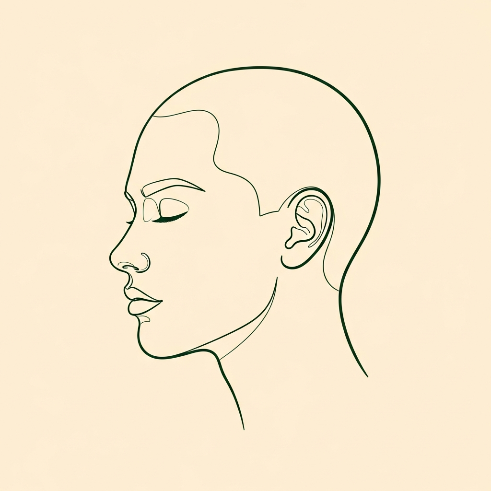
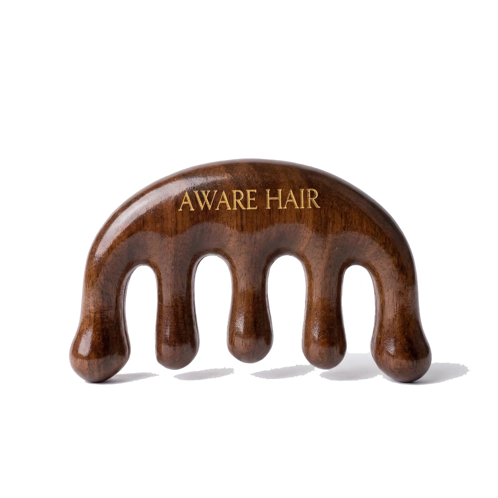

Sandalwood Meridian Scalp Gua Sha Usage Ritual
3-5 minutes, 2-3x per week
◆


01
Hairline
Shenting GV24
Glide upward from hairline toward the crown with gentle pressure.
02
Crown
Baihui GV20
Pause at the crown. Apply light circular pressure for 10-15 seconds.
03
Temples
Shuaigu GB8
Sweep along both temples with the curved edge in small, firm strokes.
04
Nape
Fengchi GB20
Press and hold at the base of the skull to release tension.